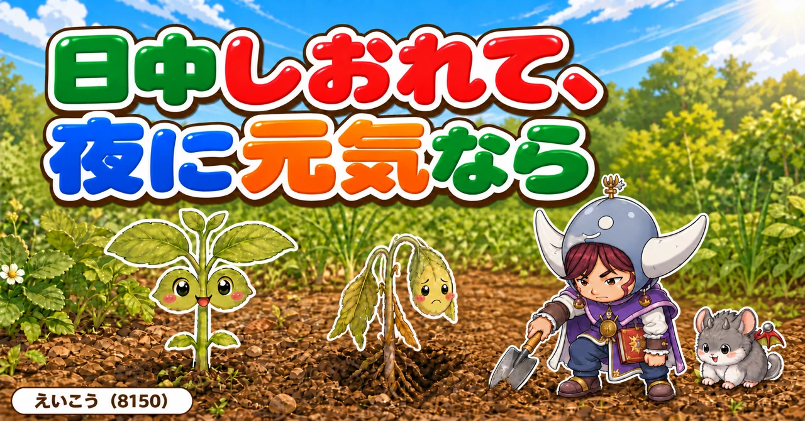

春の苗の虫対策｜葉の穴・しおれ・倒れる株から選ぶ点検と予防

どうも、8150（えいこう）です🌱 家庭菜園歴8年、理科の教員免許を持っていて、有機・無農薬で野菜を育てています。
📖 この記事の目次
この記事で分かること
- 春の小苗は、食べられた葉だけでなく、新芽と株元まで点検します。葉の少ない時期の被害を早く見つけることが出発点です。
- ウリ科の丸い食べ跡はウリハムシを疑う手掛かり。穴の形に加え、野菜の種類と現物を確認します。
- 昼にしおれる株は、土の乾き、湿り過ぎ、根元の傷を見比べます。夕方に戻ることだけで、根が健全とも虫害とも決めません。
- ネットや銀色の被覆は予防の道具です。設置前の苗と土、設置後の葉裏も確認し、囲って終わりにしません。
- アブラムシは新芽だけでなく、葉裏や縮れた葉の内側にも付きます。少ないうちの除去と、その後の再点検を組み合わせます。
- 株が育っても観察は続けます。深刻な根の損傷は植え直しを考えますが、一時的なしおれだけで苗を抜く必要はありません。
「昨日まで元気やったのに、なんで急に？」。春の苗で困るのが、見た目の変化が早いことです。虫の名前を全部覚えるより、『どこが変わったか』を入口にすると、見る場所を絞れます。
このページで扱うのは、植え付け前後の小さな苗を守る段取りです。キュウリなどのウリ科の食べ跡、しおれと根の異変、地際で倒れた苗、新芽や葉裏のアブラムシを中心に整理します。穴のある葉を見つけても、まずは落ち着いて大丈夫。葉の表だけで答えを出さず、裏と根元を見に行きましょう☺️
これから植えるみなさんは『作業の手順』から。すでに被害があるなら『失敗の見分け方』へ進んでください。記事は長めですが、畑で必要になった項目に戻って来られるように作っています。全部いっぺんに暗記する試験ではないので、安心してくださいね。
早見：春の苗の虫対策（ひと目で分かる目安）
日付と大きさは、観察を始める目安
- 重点的に見る時期：苗を購入するとき、植える直前、植えたあとの初期生育です。葉が少なく、根も十分に広がっていない間は、小さな被害も放置しません。
- ウリハムシの動き始め：材料には4月頃という説明があります。暖かくなる時期は地域と年で違うので、4月になった瞬間に出るという予定表にはしません。
- その後の世代：7月頃の飛来や、7〜8月の収穫期の被害を警戒する説明もあります。春だけ見れば、夏は確認不要という意味ではありません。
- 成虫の大きさ：約5mmという説明と、5〜8mm程度という説明があります。7mmだけを基準にせず、小さな甲虫と食べ跡を一緒に確認します。
- アブラムシを警戒する季節：春の暖まりとともに増えやすくなります。雨よけの中では4〜6月、特に5〜6月の管理を重視する説明がありますが、冬にも残ることがあります。
- 増殖しやすい温度：雨よけ内の説明には15〜25℃という目安があります。温度計が範囲を外れたら安全、という線引きには使いません。
- 見回る時間：早朝は気温が低く、虫の動きが鈍い場合があります。捕まえやすい時間の候補であって、夕方の観察が無意味になるわけではありません。
- ネットの網目：材料には1mm以下を勧める説明と、1mm程度ではアブラムシがすり抜けるという説明があります。対象の虫と製品の適用表示を確認し、数字だけで完全防除を期待しません。
- 反射資材を置く時期：ウリ科の小苗を守りたい初期に準備します。葉が広がり、地表の反射面が隠れたあとは、同じ効き方を期待し続けないことが大切です。
- 土中の虫を探す範囲：春の苗の被害について、共通の半径や深さを指定できる材料はありません。傷んだ株の植え穴と周囲を確認し、元気な根をむやみに掘り崩しません。
- 植え直す時期：何日待つかの一律の数字ではなく、根元の傷、枯れの進み方、生育が続いているかで考えます。傷が大きく、支えや吸水を失った苗が判断の対象です。
月の数字は「そろそろ見る場所を増やそう」という合図にしてください。畑とベランダ、露地と覆いの中では、同じ日の環境が違います。カレンダーには春と書いてあっても、覆いの中は別の暖かさなんですよね。
栽培の数字と、虫対策の数字を混ぜない
- まき時・植え時：育てる野菜の品種と、地域別の適期に従います。害虫が少なそうという理由だけで、低温に弱い苗を早く植えません。
- 株間・うね幅：作物に必要な広さを確保し、葉裏や株元を見られる通路も残します。この回には全野菜共通の寸法はありません。
- 元肥・追肥：野菜と土の状態に合わせる項目です。穴やしおれを見て、とりあえず肥料を追加する判断とは分けます。
- 収穫までの日数：品種と植え方によって変わります。株が大きくなることと、害虫への警戒を終えることも別です。
- 連作の間隔：作物ごとの栽培計画で確認します。虫対策のための決まった年数を、ここでは作りません。
早見の数字を寄せ集めて、すべての苗に同じ管理をすると、野菜の都合が置いてけぼりになります。虫対策は栽培を支える作業。育て方そのものを虫の予定だけで決めないようにしましょう。
見回りは、上・裏・根元の順で
- 上から見て、新芽が伸びているか、穴が増えているかを確認する
- 葉をそっと返し、虫、卵、縮れた内側を確認する
- 根元の茎に傷がないか、土が乾き過ぎ・湿り過ぎでないかを見る
- 覆いの中、裾、土に近い下葉まで目を向ける
- 気になる株は日付と写真を残し、次に比べる場所を決める
見る順番があると、「虫おらへんかな」と畑全体をぼんやり眺めるより、点検した場所がはっきりします。葉裏を見忘れた日も分かるので、記録は立派なノートでなくても役に立ちます。
作業の手順（時期の順）
1．植え付け前に、前作の片付けと土の点検をする
- 前作の枯れ葉、傷んだ茎、虫が付いた残りを確認し、植える場所から片付けます。
- 使い終わった覆いを外すときは、その下の葉や土も見ます。表面がきれいでも、隠れている場所を一度確認してください。
- 土を整える作業中に幼虫を見つけたら、姿と場所を確かめます。分からない虫まで全部まとめて害虫と決めません。
- 食害のあった場所は記録し、次に苗を植えるときに植え穴の土を丁寧に見ます。
- 水がたまりやすい場所も確認し、植える前に排水を整えます。後日のしおれを、虫だけの問題にしないための準備です。
土の中にいた虫が、そのまま次の野菜に影響することがあります。苗を植える前なら、根を傷めずに土を確認できます。「植えてから何とかしよう」より、この段階の一手が楽なんですよね。
冬に土を掘り返し、土の中の虫を冷気や鳥にさらす作業も、予防の材料になります。ただし、冬に作業した場所だから春に虫がいない、という保証はありません。冬の作業をしたかどうかと、目の前の土に何がいるかは分けて見ます。
もう春になっていても、準備が全部手遅れになるわけではありません。植える場所を整える、残っている被害株を片付ける、耕したときに見つかった幼虫を確認する。今できる作業から始めれば大丈夫です。
2．買った苗を、植える直前にもう一度見る
- 葉の表を見て、食べ跡、色の抜け、新芽の縮れを確認します。
- 葉裏と中心の芽をそっと見て、虫や卵が付いていないか調べます。
- 茎の付け根に不自然な傷や折れがないかを確認します。
- 気になる虫がいたら、苗を傷めないように取り除き、すぐネットの中へ持ち込まないようにします。
- 苗の状態が分かる写真を残してから植えます。
売り場に並んだ苗にも、虫や卵が付いている可能性はあります。「購入したばかり」と「虫がいない」は同じではありません。これはお店を疑うという話ではなく、苗を移動させる前の点検です。
写真があると、翌日の穴が新しくできたのか、購入時からあったのかを比べられます。食べ跡は虫を取り除いても葉に残るので、傷んだ葉を見るたびに「対策が効いてない！」となりやすいんです。まず増えているかを見ましょう。
3．植えるときに、予防の道具を準備する
- ウリ科の小苗なら、成虫の飛来を抑える反射資材を使うか検討します。
- シルバーマルチなどを使う場合は、設置方法を確認し、反射する表面が葉で隠れない初期に用意します。
- 防虫ネットを使うなら、対象の虫に合う製品を選び、葉が押し付けられない空間を作ります。
- ネットで囲う直前に、苗と土の表面を点検します。
- 裾の開き、破れ、作業口の閉め忘れを確認します。
反射資材は、来た虫を一匹ずつ取り除く作業とは役割が違います。飛来を減らしたい場所に先に準備するものです。すでに土中にいる幼虫を、上から銀色に覆えば消せる、という道具ではありません。
高知県のウリハムシの解説でも、成虫の葉への被害と幼虫の根への被害を分け、銀色の被覆を成虫の飛来防止に挙げています。対策を選ぶときは、『葉に来る成虫を減らしたいのか』『根の異変を調べたいのか』を先に分けると、道具の使いどころが見えます。
参考：[高知県・すいかのウリハムシ](https://www.nogyo.tosa.pref.kochi.lg.jp/info/dtl.php?ID=3377)
プランターでも考え方は同じです。株元を見られる状態を保ち、反射面が見えるように使います。銀色なら何でも同じ性能とは限らないので、価格や見た目だけで選ぶより、栽培に使える製品かと設置の表示を確認してください。
4．覆いをかけたあとも、中の苗を点検する
- 外から葉の形や色の変化を見ます。
- 点検できる部分を開け、葉裏と成長点を確認します。
- 虫がいたら、覆いの中に残したまま閉めず、苗を傷めない方法で取り除きます。
- 落ちた葉や虫が付いた残りを片付けます。
- 点検後は裾と開けた場所を戻し、次に見る株を決めます。
保温の覆いは、春の冷え込みから野菜を守ります。その一方で、中が暖かく、雨や風が入りにくい環境は、入ってしまった虫にとっても過ごしやすい場合があります。野菜だけが快適、とはいかないんですよね💦
雨よけ、保温用の覆い、防虫ネットは目的が違います。雨を避ける道具をかけたから虫も防げる、と考えないことが大切です。どの道具でも、葉裏が見えないままの日が続かないように点検の入口を作っておきます。
5．植えたあと、同じ順番で見回る
- まず全体を見て、昨日より元気がない株を選びます。
- 葉の穴や新芽の変化を見つけたら、その葉の裏まで見ます。
- しおれていたら、土の乾き・湿りと、根元の茎の状態を確かめます。
- 地際で倒れた苗は、切れた場所と植え穴の土を確認します。
- 見つけた虫を除去したあと、次の見回りで新しい被害があるか比べます。
株をぐいぐい揺らして、虫がいるかを試す必要はありません。植えたばかりの根を自分で傷めてしまうと、点検が新しい問題を作ります。目で見えるぐらつきや、すでに倒れている状態を手掛かりに、必要な範囲で調べましょう。
虫を見つけられなかった場合も、点検が無駄だったわけではありません。『葉裏には見当たらない』『土は湿っている』『茎は切れていない』という情報が増えます。犯人の名前が出るまで、同じ対策を重ね続けるより、条件を一つずつ整理してください。
6．アブラムシが少ないうちに、苗に負担をかけず落とす
- 新芽、葉裏、丸まった葉の内側を確認し、付いている場所を把握します。
- 少数なら、柔らかな筆などで苗を傷めないように落とします。
- 水で落とす方法を使う場合も、細い苗や新芽に強い勢いを当てないようにします。
- 葉の内側や付け根に残っていないか見ます。
- 次の見回りでも同じ場所を確認し、新しく増えていないかを比べます。
一度落とせば、そのあと何日も見なくてよいという作業ではありません。小さい虫は取り残しや新たな飛来もあるので、『少ないうちに見つける』『取り除く』『また見る』を続けます。
自家製の液を強くしたり、別の方法を次々に足したりする前に、物理的な除去で苗が傷んでいないかも見てください。虫が減った代わりに新芽が傷んだら、守りたいものが逆になってしまいます。小苗のうちは特に、作業の強さを控えめにします。
7．葉が増えたら、予防の効き方を見直す
- 葉が反射面を隠していないかを確認します。
- ネットに葉が触れていたり、株が窮屈になっていたりしないかを見ます。
- 外すかどうかは、野菜の種類、寒さ、対象の虫、今の生育で考えます。
- 成虫の食べ跡だけでなく、花や実への被害も見る段階へ移ります。
- 被害の出た株や場所を記録し、収穫後の片付けにつなげます。
大きな株では、少し葉を食べられても、小苗のときほど生育に響かない場合があります。ただし、根、花、実の被害まで気にしなくてよいという意味ではありません。守る場所が変わる、と考えると分かりやすいです。
覆いを外して天敵が入れるようにする考え方もありますが、全野菜を同じ日に一斉に開放する手順にはしません。寒さから守る必要が残っている苗や、特定の虫を防ぎたい作物もあります。道具を外すことを目的にせず、何を守るために使っているかで判断しましょう。
失敗の見分け方（症状→原因→やること）
ウリ科の葉に丸い食べ跡が増える
- 症状：キュウリ、メロン、スイカ、カボチャ、ズッキーニなどの葉に、丸みのある食べ跡や穴が見えます。
- 考えられる原因：ウリハムシの成虫が候補です。ただし、葉の穴だけで虫の種類を確定することはできません。
- やること：葉の表裏と近くを見て、成虫の現物を確認します。見つかった虫を取り除き、次の点検で食べ跡が増えたかを比べます。
ウリハムシが候補になるのは、『ウリ科の野菜』『特徴的な食べ跡』『そこにいる虫』が結び付くからです。別の科の野菜にも丸い穴があるから、全部ウリハムシとして扱う、という診断にはしません。
小苗では葉の枚数だけでなく、新芽が無事かも見てください。古い葉に穴が残っていても、新しい葉が伸び、被害が増えていないなら、その変化が判断材料になります。穴のない新品の葉に戻すことが、対策の目的ではありません。
葉の枚数を数えて「半分食べられたから生育する力も半分」と計算するのは避けます。葉の大きさや傷の範囲も違うので、枚数と働きは一対一ではありません。数字に直すより、『どの葉が残っているか』『新芽が育っているか』を見ましょう。
葉が薄く透ける、白っぽく削られる
- 症状：葉の一部が薄い膜のように残り、白く透けたり、表面だけ削れたりしています。
- 考えられる原因：葉を食べる別の虫も候補になります。ウリ科の丸い食べ跡とは、まず分けて扱います。
- やること：食べられた部分の裏と周辺を見て、虫や卵がないかを確認します。現物が見つからなければ写真を残し、傷が広がる場所を追います。
食べ跡は、虫の種類を考えるヒントですが、虫の名札ではありません。似た被害があっても、実物がいない段階では候補を一つに狭め過ぎないようにします。
葉の表面が削られている場所と、葉が黄色くなっているだけの場所も分けます。光に透かして見たり、裏側から見たりすると、葉の組織が残っているのかを確認しやすくなります。見え方を変えるだけで分かることもあるんですよね。
昼にしおれ、夕方や夜には持ち直す
- 症状：明るい時間に葉が垂れ、暗くなる頃に見た目が戻ります。同じ変化が繰り返されることがあります。
- 考えられる原因：土の乾燥、水やりが多過ぎることによる根の異変、根の食害などです。ウリ科ではウリハムシ幼虫も候補ですが、症状だけでは決められません。
- やること：土の乾き方、水やりや雨の履歴、根元の傷を確認します。夕方の状態も記録し、葉の枯れや生育停止が進んでいないかを比べます。
夕方に元気に見えたら、ほっとしますよね。その安心はあってよいのですが、次の昼にも同じようにしおれるなら、原因を確かめる作業は続けます。「夜は戻るから問題なし」で終わらせない、ということです。
土が十分湿っているのに、しおれているからと水を繰り返し足すのは、原因を確かめる前の対応になります。まず土を見る。そのあと水やりを考える。この順番を守ると、乾燥と過湿を混ぜにくくなります。
根の食害を調べる必要がある場合も、元気な株を全部掘るのではなく、深刻な被害株や植え替える株を中心に確認します。『しおれを見つける作業』と『根を掘って確認する作業』の間に、一度、土と茎を見る段階を置いてください。
株元が不安定で、下の葉から枯れが進む
- 症状：株元が極端にぐらつき、葉が丸まったり、下から枯れたりします。根元の茎に崩れや穴が見える場合もあります。
- 考えられる原因：根や地際の食害、根腐れなど、根の働きや株を支える部分の異変が候補です。土中のコガネムシ類の幼虫なども考えられます。
- やること：地際の傷を確認し、植え直す判断をする場合は根と植え穴の土を調べます。虫が残っていないかを確認してから、次の苗を考えます。
ぐらつきは「根に何か起きているかもしれない」という手掛かりです。ウリハムシ幼虫だけを指す合図ではありません。植えた直後の固定の弱さと、傷んで崩れた根元も同じ状態ではないので、いつから変化したかが役に立ちます。
根元が大きく失われ、枯れが進んでいる苗には、植え直しという選択肢があります。粘れば必ず回復するとも、少し揺れたら必ず抜くとも決めません。今の傷と、次の苗を植えられる時期を合わせて考えましょう。
プランターや袋栽培でも根の食害は起こり得ます。畑ではないから土中の虫はいない、とは考えないことが大切です。一方で、容器なら必ず畑より重症になるという比較もできません。栽培場所の名前より、現物を見ます。
苗が地際から折れたように倒れている
- 症状：植えた苗の茎の付け根が切れたり、食べられたりしたようになり、苗が倒れています。
- 考えられる原因：ネキリムシなど、地際を食べる土中の幼虫が候補になります。風や作業による折れも区別する必要があります。
- やること：切れた面と周囲の土を確認し、植え穴付近に幼虫がいたら取り除きます。隣の苗にも新しい傷がないかを見ます。
ここで頼りになるのは、倒れている時刻だけでなく、茎の傷です。朝に発見したから虫名が決まるわけではありません。支えが外れただけなのか、茎がちぎれているのか、地際に食べ跡があるのかを分けてください。
探すときは「この半径なら絶対にいる」という数字に縛られないようにします。別の季節の別の虫について示された土の深さを、春の苗の周囲の半径に読み替えることもできません。まず被害の中心から、根をむやみに傷めない範囲で見ます。
一匹見つけたら、それで周辺の被害が必ず止まるという保証もありません。取り除いたことは一歩前進。次の点検で、別の苗が倒れていないか確認するところまでを一組にします。
新芽や葉裏に小さな粒が集まる
- 症状：黒や緑などの小さな虫が、新芽、葉裏、葉の内側にまとまって付いています。葉の縮れを伴う場合もあります。
- 考えられる原因：アブラムシが候補です。色だけで判定せず、実際に虫が付いているかを見ます。
- やること：付いている場所を確認し、少ない段階で丁寧に落とします。見える集まりだけでなく、葉の内側も再点検します。
成長点は、新しい葉や茎が伸びる部分のことです。ここだけ見れば十分という意味ではありません。下葉の裏や土に近い場所に残っている場合もあるので、上から順番に見ていきます。
縮れた葉を無理に広げると、新芽が傷むことがあります。そっと見える範囲を確認し、今の形を写真に残して、新しく伸びる葉も比べます。葉が縮れているという見た目と、その中に虫がいるという確認を分けるのがポイントです。
黒い被覆の上に、白い粉のようなものがある
- 症状：株の下に白い小さなものが落ち、黒い地表の被覆の上で目立っています。
- 考えられる原因：アブラムシの抜け殻が手掛かりになる場合があります。ただし白いものがすべて虫由来とは限りません。
- やること：その上の葉裏と新芽を調べ、アブラムシが付いていないか確認します。白いものだけを見て卵と決めません。
虫そのものが見つからなくても、残ったものから見る場所を選べます。大事なのは、「白い粉があるから散布する」ではなく、「白い粉があるから葉裏を見る」と、一段階はさむことです。
アリが多く見える場所も、アブラムシを探す手掛かりになります。ただし、アリがいるだけで被害が確定するわけではありません。アリの動きを追った先の葉や茎を見て、何があるかを確認しましょう。
葉にまだらな黄変があり、新しい葉もおかしい
- 症状：葉の色が不均一になり、新芽の変形や生育の停滞が見えます。
- 考えられる原因：ウイルス病を含む病気や、栽培条件による異変が候補です。黄色い葉だけでモザイク病と決められません。
- やること：作物名、症状の出た時期、葉の写真、虫の有無をまとめ、必要なら地域の栽培相談先に確認します。原因不明の株を切った道具で、続けて他の株を扱わないようにします。
アブラムシがウイルスを運ぶ場合があることと、今ある黄変がそのウイルスによるものかは、別の判断です。虫がいたという理由だけで、その株が感染したとも言えません。
ウイルスに感染した株は、虫を落とすだけでは治せません。だからこそ、害虫の除去と病気の判断を分けます。道具の衛生も大切ですが、特定の拭き方一つであらゆるウイルスを防げる、と決めつけないでください。
説明が分かれていること
大株なら食べられても平気、という説明
- Aという説明：成長したウリ科の株は、多少の葉の食害に耐えられるので、小苗の初期生育を重点的に守るという考え方です。
- Bという説明：春の成虫を減らして、次の世代が出る夏の葉、花、実の被害も抑えるという考え方です。
- どう考えればよいか：『今ある苗の葉を守る』と『その後の被害も減らす』は、見る時間の長さが違います。春の対策を重視しつつ、成長後も被害の有無を見ます。
どちらかを消してしまうと、「大きくなったから何も見なくてよい」か、「穴が一つでも大事件」かの両極端になりがちです。残った葉と新芽の伸びを見ながら、花や実に被害が移っていないかも確認してください。
銀色の反射は、どの虫にも同じだけ効くのか
- Aという説明：ウリハムシに対し、銀色の被覆で飛来を抑えることを重視する説明があります。
- Bという説明：アブラムシへの反射対策は、過度に期待しないという説明もあります。
- どう考えればよいか：対象の虫が違うので、同じ効果の比較とは限りません。反射資材を使っていても現物と被害を確認し、完全に防げる道具として扱いません。
飛来が少なかったという観察と、どの条件でも入らないという保証も違います。周囲の虫の量、葉が反射面を隠す程度、設置した場所などがそろわなければ、同じ結果になるとは言い切れません。
反射のしくみについても、「下からの光で上下が分からなくなり、着地できなくなる」とまで断定する材料はありません。ここでは、反射を利用した飛来抑制という範囲で理解します。理科らしい説明ほど、つい納得しちゃうんですが、分かっている範囲を越えて話を足さないことも大切です。
ネットの1mmは、十分なのか足りないのか
- Aという説明：アブラムシなどを防ぐために1mm以下を選ぶという説明があります。
- Bという説明：1mm程度の網目ではアブラムシがすり抜けるため、ほかの虫への対策として考える説明があります。
- どう考えればよいか：『以下』と『程度』を同じ保証にしません。対象害虫と製品規格を確認し、裾の隙間や設置前の持ち込みも点検します。
公的な資料でも条件を確認することが大切です。群馬県のアブラムシ類の情報では、施設栽培の飛来防止に0.8mm以下を挙げています。この施設用の目安を、すべての家庭菜園で同じように使える万能の数字に変えるのではなく、何を防ぐための規格かを見る参考にしてください。
参考：[群馬県・アブラムシ類の病害虫情報](https://www.pref.gunma.jp/page/705044.html)
雑草を片付けるか、天敵の居場所を残すか
- Aという説明：ウリハムシの越冬場所を減らすため、通路を含めて雑草を丁寧に除去する説明があります。
- Bという説明：益虫の居場所を残すため、雑草をすべて取り過ぎないという説明があります。
- どう考えればよいか：目的を分けます。苗の近くの被害や越冬場所を整理する作業と、天敵が暮らす場所の管理を、畑全体で同じようにしません。
虫が付いた残りや枯れ葉を、益虫のためという理由で何でも置いておく必要はありません。一方で、土を耕したときの生き物を全部敵として扱うのも違います。場所、被害、そこにいる虫を確かめて管理します。
ネットを早く外すか、かけ続けるか
- Aという説明：白菜などでは植え付け時からネットで守り、作物の大きさや季節で外すという説明があります。
- Bという説明：春に外気で育つ条件が整ったら、保温や覆いを外して天敵が入れるようにする説明があります。
- どう考えればよいか：作物と季節が違う話です。外す月を一つに統一せず、保温が必要か、対象の虫がいるか、株が窮屈かを確認します。
自家製散布液の配合や待ち時間
- Aという説明：油石けん水の洗い流しまでを10分ほどとする例があります。
- Bという説明：10〜20分、15分ほど、20〜30分とする例もあり、作物や場面が違います。唐辛子を使う液にも、抽出期間や希釈が異なる説明があります。
- どう考えればよいか：同じ配合・濃度の比較とは確認できません。短い方や長い方を正解とせず、この回では小苗向けの共通レシピにしません。
酢を使う話にも、別の対策と併用した観察や、効果が試験段階という留保があります。「付かなかったから、この液だけが効いた」とは言えません。材料の数字をつなぎ合わせて、濃い自家製液の作り方にすることは避けます。まず観察と丁寧な除去を土台にしましょう。
よくある質問
ベランダでもウリハムシは来ますか
飛んで来る可能性があります。鉢が一つでも、屋外だから虫が絶対に来ないとは考えません。
ただし、どのベランダにも必ず来ると決まっているわけではありません。ウリ科の葉に食べ跡があれば、表裏を確認してください。
穴のある葉は、全部取った方がよいですか
穴だけを理由に、残った葉を次々に取る必要はありません。葉に残る傷と、今も続く食害を分けて見ます。
新芽の状態と、新しい穴が増えているかを確認し、傷んだ葉を取る判断は作物の管理と合わせて考えます。
葉の穴が減らないのは、対策が失敗したからですか
古い穴は、虫を取り除いても元の葉に残ります。穴の総数だけでは、いま食べられているかが分かりません。
写真で位置を比べ、新しい傷と新しい葉の状態を見てください。「残っている傷」と「増えている傷」を分けると判断しやすいです。
しおれたら、先に水をたっぷり与えますか
まず土の乾き方を確認します。すでに湿っている土への追加の水やりは、根の異変を解決できないことがあります。
乾燥の有無、雨や水やりの履歴、地際の傷を見てから対応を選びます。
夜に元気なら、根は大丈夫ですか
それだけでは判断できません。昼夜の変化は観察材料ですが、原因を一つに決める材料ではありません。
翌日も繰り返すか、枯れや生育の停滞が進むか、土の状態はどうかを一緒に見ます。
土に幼虫が一匹いたら、全部の苗を抜きますか
虫の種類と被害を確認する前に、全株を抜く必要はありません。元気な苗の根を傷めないことも大切です。
被害株の植え穴を中心に調べ、近くの苗の新しい食べ跡や倒れを点検します。
倒れた苗の近くで虫が見つからないときはどうしますか
茎の切れ方と、ほかの苗の傷を確認し、次の見回りでも新しい被害がないかを見ます。
虫が見つからないことだけで食害を否定せず、逆に虫害と確定もしません。写真と被害の位置を残すと、相談にも使えます。
アブラムシは黒いものだけですか
黒だけでなく、緑などの色もあります。色を一つに決めると、見落としやすくなります。
小さな虫がまとまって付く場所を確認し、葉裏や縮れた内側も見てください。
筆で一度落とせば終わりですか
一度の作業では取り残しや新たな飛来を確認できません。次の点検でも同じ場所を見ます。
少数のうちに除去し、そのあと増えていないかを比べるところまでが一組です。
ネットの中に虫がいるのは、網目が大きいからですか
網目のほかに、裾の開き、破れ、苗に付いた虫の持ち込み、土に残った虫も候補になります。
製品を替える前に、入る場所と中の状態を確認してください。
銀色の資材を使えば、土中の幼虫も防げますか
成虫の飛来を抑えることと、すでに土の中にいる幼虫を取り除くことは別です。
反射資材を使っていてもしおれや株元の傷があれば、土と根元の点検を省きません。
テントウムシがいれば、何もしなくてよいですか
天敵がいることは観察材料ですが、それだけで害虫が減るとは決まりません。害虫の増減と新しい被害も見ます。
見つけた虫を全部害虫として処分せず、益虫かどうかを確かめてください。
虫が付くのが嫌なので、予防の液を毎回かけますか
この回では、自家製散布液を繰り返しかける方法を基本にしません。小苗への負担も考える必要があります。
苗と土の点検、予防の道具、少数の虫の除去から始め、原因が分からないまま方法を重ねないようにします。
一日に何回、何分見ればよいですか
すべての苗に共通する回数や時間は決められません。植えた直後や被害が出たときは、間をあけ過ぎず変化を確認します。
短時間でも、新芽・葉裏・根元の順番で見ると、前回と比べる場所がそろいます。
学ぶ：苗の被害と虫対策のしくみ🔬
同じ虫でも、育つ段階で食べる場所が変わる
ウリハムシを調べるとき、葉にいる成虫と、土の中で根を食べる幼虫を分けることが大切です。名前が同じだからといって、見つかる場所も対策も同じになるわけではありません。
- 葉の食べ跡が増えたら、葉の表裏とそこにいる成虫を見る
- 根元に傷があり、株が弱ったら、土の状態と根の異変を調べる
- 反射資材は、主に飛んで来る成虫への予防として考える
- 根の異変が進んだ株は、予防の道具を足すだけで済ませない
この整理は、虫の一生と、野菜のどの部分が傷んでいるかを結び付ける話です。「目に見える虫を減らしたから、土の中も全部解決した」と考えないために役立ちます。
島根県の解説でも、成虫が葉を、幼虫が根を加害し、主根への被害が進むと地上部の生育が衰え、ひどい場合はしおれて枯れるとされています。葉だけを見ていては分からない被害がある、ということですね。
参考：[島根県・ウリハムシの解説](https://www.pref.shimane.lg.jp/industry/norin/gijutsu/nougyo_tech/byougaityuu/byougaityuu-index/kyuuri/ki-urihamushi.html)
小苗を守るのは、葉と根の両方が必要だから
葉は光を受けて育つための材料を作り、根は水分などを取り込む部分です。小苗では、これから葉と根を増やしていく途中なので、食害で初期の生育が妨げられることがあります。
ただし、葉の枚数をそのまま能力の割合にすることはできません。大きい葉と小さい葉、残っている部分と失った部分、新しく伸びる葉では条件が違います。『葉が何枚あるか』だけでなく、『どこが残り、どこが育っているか』を見る必要があります。
根の被害は、葉の食べ跡のようには見えません。そこで、しおれ、ぐらつき、枯れの進み方といった地上部の変化から、土と根元を見る順番を選びます。地上部は、見えない場所を調べる入口にもなるんです。
症状は、原因の名前ではない
しおれは、根の食害でも根腐れでも見られることがあります。葉の縮れも、虫が付いた状態と、それ以外の異変を分けて確かめる必要があります。似た見た目から、違う原因が候補になるわけです。
- 観察した事実：「昼に葉が垂れた」「土は湿っていた」「根元に傷があった」
- 考えた候補：「根の働きが弱っているかもしれない」「土中の虫がいるかもしれない」
- 次に確かめること：「傷の周りに虫がいるか」「枯れが進んでいるか」
この三つを混ぜないと、原因が分からないときも行動を選べます。虫の名前が言えなくても、観察はできるんですよね。むしろ、名前を急いで決めるより、具体的な状態が残っている方が、次に役立つことがあります。
写真を撮るなら、葉だけのアップに加えて、株全体と株元も残します。どの部分が弱っているかが見えると、あとで比較したり相談したりしやすくなります。
予防・除去・植え直しは、違う働きの作業
ネットは外から入りにくくする道具、反射資材は飛来を抑えるための道具です。どちらも、設置する前から中にいた虫を、自動的に取り除くものではありません。
筆などで虫を落とすのは、今そこにいる虫への対応です。取り除いたあとにまた増えるかを見ることで、次の対応を選べます。植え直しは、根や地際の損傷が大きい苗の立て直しを考える作業で、虫を見つけるたびに行う作業ではありません。
- まだ被害がない段階：持ち込みを防ぐ点検と、必要な予防をする
- 虫や新しい食べ跡がある段階：現物を確かめ、丁寧に取り除く
- 根元が失われ、生育が難しい段階：根と土を確認し、植え直しを検討する
段階が違えば、作業も変わります。しおれた株に予防の道具だけを増やす、元気な苗を虫が怖いから抜く。そうした行き違いを減らすために、先に症状を整理します。
覆いの中は、小さな環境として見る
保温の覆いの中では、外の畑と温度や風の当たり方が違います。雨よけの下も、雨が当たらないだけでなく、虫を落とす雨風や天敵の入り方が変わる場合があります。
そのため、外に虫が少ない日に、中も同じとは限りません。囲っていた苗に持ち込みがあれば、気づかないまま増えることがあります。覆いの中の葉を点検するのは、せっかくの予防を疑う行為ではなく、その環境がどうなっているかを見る作業です。
アブラムシを食べる虫もいる一方、アリが甘い排泄物を得る関係などもあります。畑には野菜と害虫だけがいるわけではありません。すべての虫を一括りにせず、『誰が、どこで、何をしているか』を見てみると、理科の話が急に畑の話になるかなと思います🔬
まとめ
春の虫対策は、虫の名前を全部覚えるより、見る順番を決めると始めやすくなります。葉の上、新芽、葉裏、株元、必要なら植え穴。症状から、次に確認する場所へ進みましょう。
- 植える前：苗の表裏と土を確認し、虫や卵を持ち込まないようにする
- 植えたあと：食べ跡が増えたか、新芽が伸びているかを比べる
- しおれた株：土の乾き・湿りと茎の傷を見て、原因を一つに決めない
- 倒れた苗：地際の傷と植え穴を確認し、周囲の苗も見直す
- アブラムシ：少ないうちに落とし、葉の内側まで再点検する
- 予防の道具：反射面の隠れやネットの隙間を見て、設置後も観察する
- 深刻な根の傷：次の苗を植える前に土を確認し、植え直しを検討する
「穴があるから虫の薬」「しおれたから水」「元気がないから肥料」と、見た目からすぐ作業を足す前に、一度だけ立ち止まって見てください。どこが変わったかが分かると、やることを絞れます。
まずは、気になる一株の新芽と葉裏を確認してみてください。しおれがあるなら、株元と土も。見つからなくても、見た場所を覚えておけば次の点検につながります。小苗のうちに少し丁寧に見る。その積み重ねで、春の管理がやりやすくなるかなと思います🌱
防虫シルバーマルチ
光を反射して、アブラムシとウリハムシの向きを狂わせます。無農薬でいちばん効く「光」の対策です。
![[商品価格に関しましては、リンクが作成された時点と現時点で情報が変更されている場合がございます。]](https://hbb.afl.rakuten.co.jp/hgb/55e77bb2.a973bab2.55e77bb3.28befe28/?me_id=1223148&item_id=10001699&pc=https%3A%2F%2Fthumbnail.image.rakuten.co.jp%2F%400_mall%2Fideshokai%2Fcabinet%2Fam425.jpg%3F_ex%3D240x240&s=240x240&t=picttext "[商品価格に関しましては、リンクが作成された時点と現時点で情報が変更されている場合がございます。]")

防虫ネット（1mm目）
苗が小さい4月から5月だけの勝負です。この時期さえかけておけば、あとは要りません。

アーチ支柱
ネットを浮かせるための骨です。葉に触れていると、その上から卵を産まれます。

不織布
ネットより軽く、そのままかけられます。遅霜と虫の両方を兼ねられます。
![[商品価格に関しましては、リンクが作成された時点と現時点で情報が変更されている場合がございます。]](https://hbb.afl.rakuten.co.jp/hgb/56bc237a.e97551b1.56bc237b.2513ed10/?me_id=1310260&item_id=10000879&pc=https%3A%2F%2Fthumbnail.image.rakuten.co.jp%2F%400_mall%2Fdiokasei%2Fcabinet%2F007fusyokufu%2F12g%2Fimgrc0092049705.jpg%3F_ex%3D240x240&s=240x240&t=picttext "[商品価格に関しましては、リンクが作成された時点と現時点で情報が変更されている場合がございます。]")
あわせて読みたい